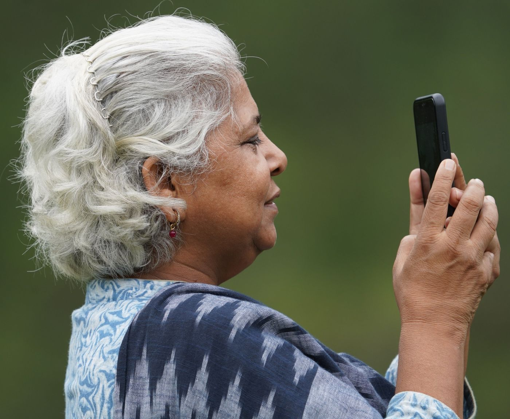
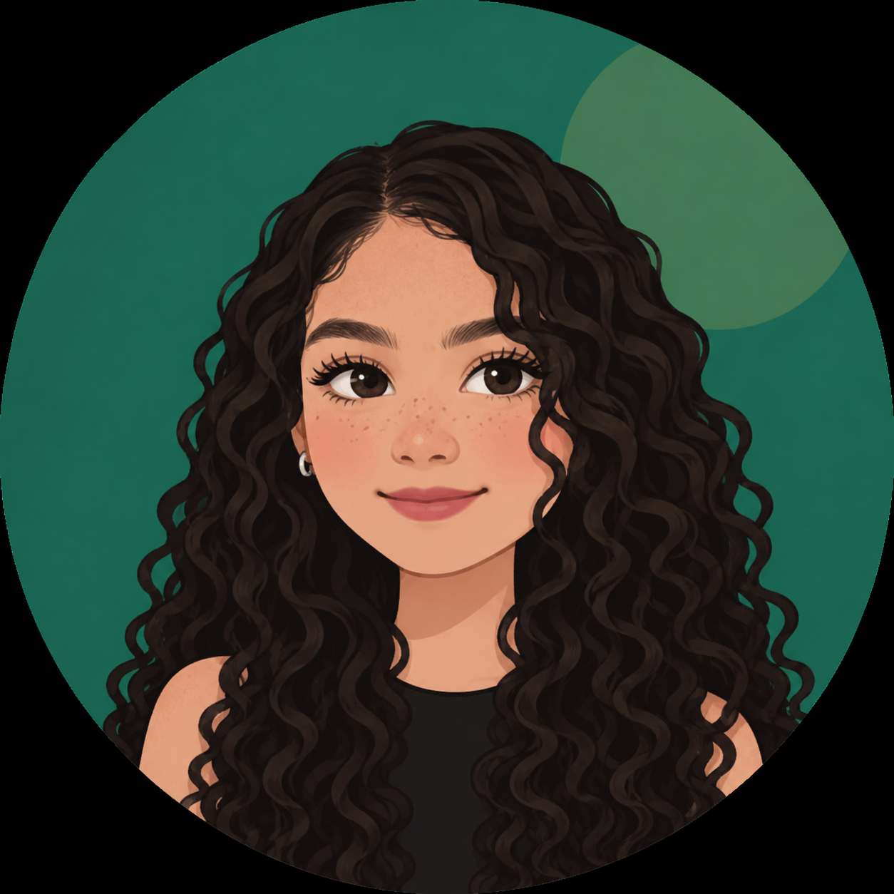

Entradas del blog

Bienvenidos a Conecta Soledad +60
De dónde salió la idea, la guía multidimensional con las dos problemáticas que analicé y el plan de trabajo del semestre.
Leer entrada →Abuelos sin señal: la brecha digital que se vive en Soledad
La problemática, el contexto del territorio con mapa y fotos, los objetivos y la justificación del proyecto.
Leer entrada →Webinar: "Mi celular, mi aliado"
Viernes 20 de noviembre de 2026. Aquí quedarán la grabación y los materiales.
Entrevista a un experto en inclusión digital
Viernes 27 de noviembre de 2026. Recomendaciones para enseñar tecnología a las personas mayores.

Sobre mí
Soy Laura Vanessa Bornacelli Parra, estudiante de Ingeniería de Software en UNIMINUTO y vivo en Soledad, Atlántico. Este blog es parte de mi Práctica en Responsabilidad Social, en el eje de derechos humanos e inclusión social.
Escogí este tema porque lo vivo en mi casa y en mi barrio: mis familiares y vecinos mayores me piden ayuda con el celular casi todas las semanas. Quiero que esa ayuda se convierta en algo que ellos puedan hacer solos.